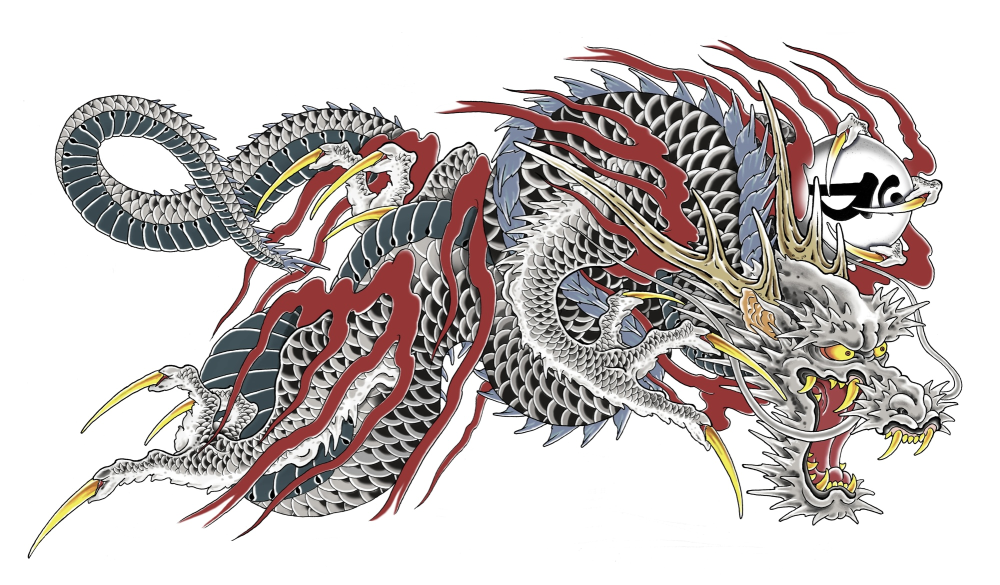
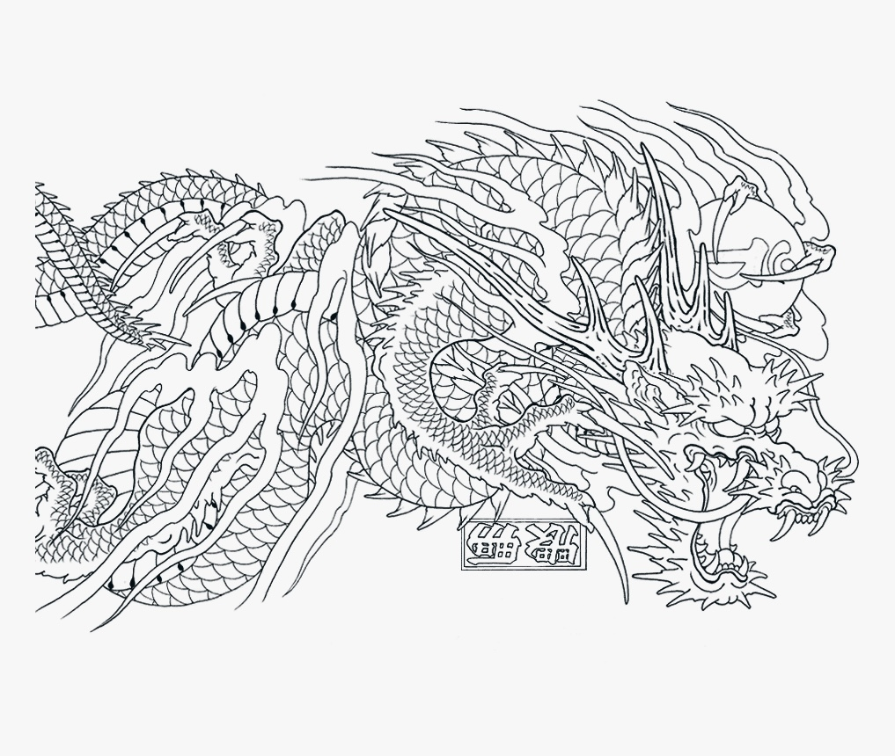
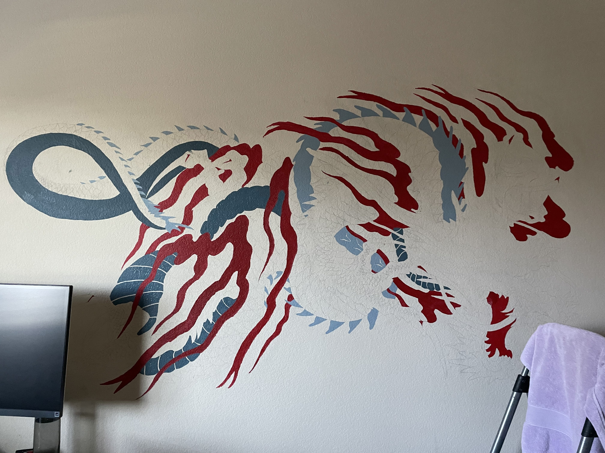

Anyone who’s played Yakuza can recognize Kiryu’s insanely cool dragon tattoo. It might be my favorite tattoo in the series and I absolutely love Kiryu as a character. So, as an homage to the Dragon of Dojima, I painted his dragon on the wall of my room!
First, I found a lineart-only version of kiryu’s tattoo to project onto my bedroom wall. This way, I could trace the lines without having to worry about messing up the proportions. I would show a picture of my wall with the lines but I did it all in pencil so it didn’t show up on camera. Note for if you’re trying this at home: Don’t be afraid to use a pen or marker for the lineart! You can easily paint over it and more importantly, it is so much easier to see.

After the lines are marked, I basically just chose a color and applied it in every area where it appeared. I happen to be really bad at mixing colors so I tried to avoid having to mix the color again the next day if I missed a spot. I went in a really weird order that was based entirely on vibes but it doesn’t really matter because acrylic paint dries super quickly anyways.
So I basically blocked in every color except for the face which I blended as I went. The rest of the dragon looks like it has relatively flat colors but the face has a gradient from white to gray. And again, because acrylic dries quickly, I had to mix my palette and try to get it done in as few sittings as possible.

Once the face was done, every base color was essentially blocked in and it was time to go through with details. Things like highlights, shadows, and most importantly: the scales. The scales weren’t too difficult since they were more or less just stripes and not blended smoothly like the face but the sheer amount of them was a bit daunting. Honestly, it was kind of therapeutic since I didn’t have to mix any colors or blend anything– kind of like a paint-by-numbers. I highly recommend listening to a podcast or a couple albums.
Once this was all done, I got insanely lazy and kinda just thought, “Doesn’t it look fine?” and left it unfinished on my wall for a few years. Finally at some point I grabbed a sharpie and just started doing the outlines. I highly recommend not being like me and using a sharpie here. Use a brush or something that won’t leave white spots behind because it can’t reach the crevices in the wall’s texture. Honestly, a smarter person would’ve used primer first or sanded or literally anything but for those of us who don’t have time I recommend using a calligraphy pen. You don’t have to keep reaching for more paint but you still get a brush tip that can leave full marks that don’t look like a crayon.
All in all, I do like the mural a lot and it’s definitely made my room look a lot less empty and boring! In fact, it’s become something of a house tourist destination where my parents show visitors my wall(and subsequently, my horrendously messy room). I think if I could go back, I’d probably do my research a bit better and look into primers more. I think it could’ve also been a good idea to go to Home Depot and color match for a sample size of wall paint because I’m trash at mixing colors. And of course, I regret using a sharpie instead of opting for a brush of any kind for the line art. Despite everything, I am pretty proud of this as it’s the biggest scale artwork I’ve made and was definitely out of my comfort zone. I would recommend this for anyone to do since it wasn’t too difficult and mainly just required patience.
« Previous Post Next Post »